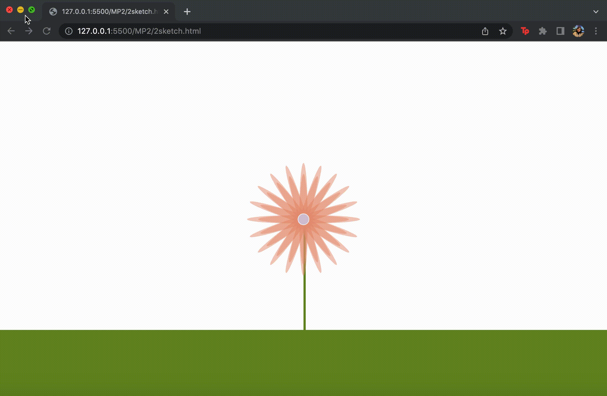
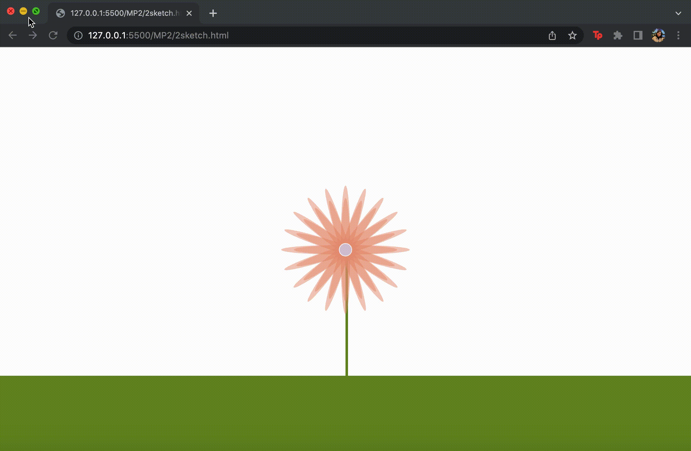
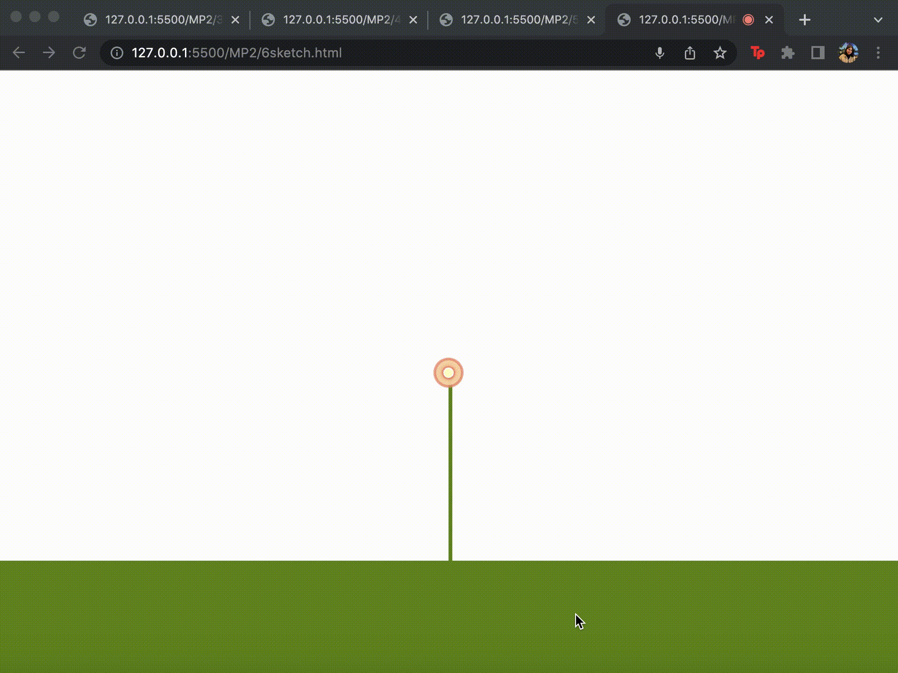
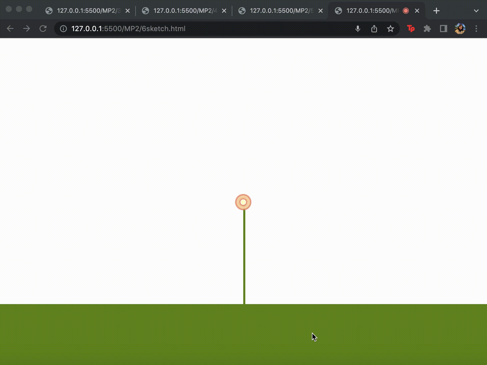

Overview and Usage
The core functionality of this project is to use p5.js to create static and dynamic sketches.
In order to run my code you can click any of the images below to go to a full screen version of the code. An alternative way to get to this code is to go to My Work, 438, and Gallery.
 



 

Development Process
- Before beginning this assignment, I first followed along with a few static and dynamic
example sketch tutorials on Coding Train to gather a basic understanding of the foundations
of p5.js.
- After understanding the basic functionality in p5.js, I followed a tutorial for making my first static sketch.
After following the tutorial, I thought about what I wanted to do for my unique sketch. I decided to keep the theme of all
of my sketches to be a flower.
After that, my next step was to create the same static sketch, except make it refresh to a slightly
different sketch everytime the refresh button is pressed. I did so by utilizing the refresh button.
The third sketch was also very similar in that regard, except instead of a random() function, I created a for loop
and made the value of the petal width increase every time it went through the loop.
- Lastly, for sketches 5 and 6, they were very similar since they both used audio to work. Sketch 6 was particularly difficult
for me, especially since my computer was being very laggy and sometimes my own microphone wouldn't work so it was difficult to know
when my code wasn't working.
Issue Deep-Dive
- An issue I spent the longest amount of time on was sketch 4, and this was due to the fact that
I had trouble figuring out where to place my petalSize variable. The variable was to add value after every iteration.
This was more of a logic error than a syntax error. I fixed this problem by taking a step back and explaining the reason
for each variable and function and also running it in Codepen. These methods combined allowed me to find my solution.
Ideas and Future
- In the future I would like to make the grass more dimension, perhaps by adding texture, movement, and shadows.
Also, for sketch 6 it would be helpful to have a button that would start and stop recording audio for visual output.
Kudos
Kudos to my boyfriend and many, many Youtube videos to help me jog my memory about for loops.